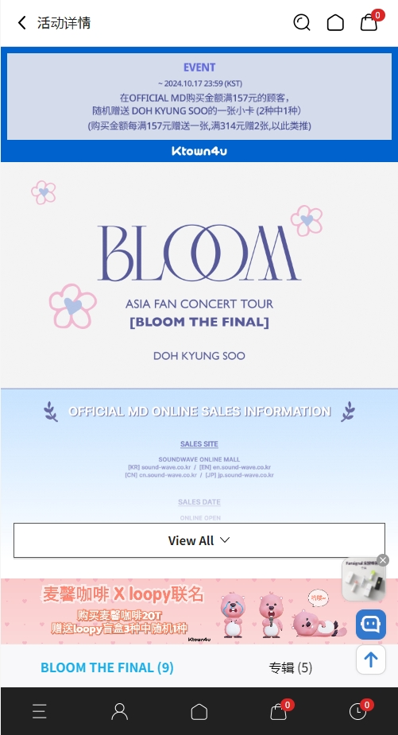

在 Ktown4u 上花的每一分钱，到底值不值？
一个 K-POP 老粉用三年多的购物记录，拆解 Ktown4u 的定价逻辑、特典体系和抽奖概率，帮你算清楚哪些钱该花、哪些是智商税。
先抛一个扎心的问题
去年年底我翻了一下自己在 ktown4u app官网 的消费账单——从 2023 年到现在，光是专辑和周边就花了将近 4000 块，还不算 Lucky Draw 为了凑抽奖资格多买的、然后至今没拆封的那三张。数字摆在眼前的时候，我沉默了好一会儿。
它到底值不值得掏钱？这个问题我问了自己不下二十次。今天就老老实实把这笔账摊开算给你看。
定价拆解：免费的 App，花钱的坑
首先说清楚：Ktown4u App 是免费的，直接从下载页面拿安装包就行，Google Play 和 App Store 也不收钱。但"免费入口"只是个幌子——真正的付费体系藏在商品页、结算页和活动专区里，一环扣一环，设计得相当鸡贼。
商品层：专辑定价的虚与实
Ktown4u 上的专辑定价基本跟韩国官网同步，正规一辑通常在 120~180 人民币区间，迷你辑便宜一些，80~140。看起来跟 Gmarket、Yes24 这些韩网差不多对吧？但 Ktown4u 的核心竞争力从来不是"低价"，而是独家特典——这才是它真正的收费锚点。
一张正规专辑在韩网买可能 150 块搞定，到 Ktown4u 可能 158，但送一张 Ktown4u 专属自拍卡、一张海报、一个贴纸包。你说这 8 块差价换这些小东西值不值？

活动层：Lucky Draw 的概率陷阱
Ktown4u 最狠的收费设计是 Lucky Draw。活动规则写得很清楚：买指定专辑 = 获得抽奖资格，奖品包括签售会门票、未公开周边、艺人视频问候这些"限量且仅通过 Ktown4u 才能获得"的东西。听起来像是"买东西送抽奖"，实际上是反过来——为了抽奖而买东西。
我统计了一下自己去年参与的三次 Lucky Draw：
- 买 2 张专辑抽 ATEEZ 签售会：没中
- 买 1 张专辑抽 NewJeans 视频问候：没中
- 买 3 张专辑抽 Stray Kids 限量小卡：没中
三次总共花了大概 650 块，收获了三张没拆封的专辑——专辑本身我确实喜欢，但那三张是为了凑抽奖数多买的，至今躺在书柜里积灰。
官方从不公开中奖概率，我只能凭体感说：签售会门票通常几十人中一，视频问候和限量小卡稍微好一点，但绝对不是"多买几张就能中"的程度。活动的具体规则和截止日期，可以去ktown4u app文档翻一翻确认。
线下门店层：体验溢价
Ktown4u 在首尔 COEX、仁寺洞、釜山和东京银座都有实体店。线下定价跟线上完全一样，但你可以现场摸到商品、拍 4 格合照、做姓名贴纸、买艺人特调饮料——这些是线上没有的体验。
去年去首尔的时候专门跑了 COEX 那家四层楼的旗舰店，氛围确实好，但特调饮料一杯折合人民币快 50，我后来觉得味道也就那样，跟便利店买的没本质区别。体验值不值，取决于你对"打卡"这件事有多在乎。
算账：三类人的不同剧本
轻度用：每月逛一次，看上喜欢的才买
如果你是这种，那 Ktown4u 对你来说就是个"偶尔逛逛的购物 App"，跟刷淘宝买零食没区别。你关注的艺人回归了，刚好有一张专辑你想听，那就买一张，特典是赠品、是惊喜，不是刚需。
你的账本：
- 每月消费：0~200 块
- 年度消费：0~2400 块
- 为 Lucky Draw 多花的钱：基本没有
这种用法下，Ktown4u 的免费下载 + 合理定价 + 独家特典，完全值。你只付专辑本身的钱，特典是白嫖的，没什么可抱怨的。唯一要注意的是物流——国际运费 + 可能被海关抽查的税，这部分成本别漏算。
主力用：有固定追的团，回归必买
这是 Ktown4u 的核心用户群。我自己就属于这一类——追着两三个团，每次回归必买，还会攒里程积分换小物件。
你的账本（按我自己的情况估算）：
- 每月消费：300~500 块（两三个团回归的月份会多一些）
- 年度消费：4000~6000 块
- 为 Lucky Draw 多花的钱：平均占总额 30% 左右
这 30% 是最值得警惕的部分。主力用户很容易陷入一个陷阱：明明只需要一张专辑听，但为了抽奖多买一两张。我去年那个 4000 块的账单里，大概 1200 块是"为了抽奖凑数"的结果。
算一笔时间账：主力用户每月大概在 Ktown4u 上花 5~10 分钟选商品、填地址、等发货。如果把这些时间折算成成本，假设你每分钟值 2 块钱，那年度时间成本就是 1200~2400 块。加上实际消费 4000~6000 块，总投入其实比想象中高不少。
那这部分钱值不值？我的答案是：专辑本身值，为抽奖多花的不值。Ktown4u 送的特典确实好看，但 Lucky Draw 的概率决定了它本质上是在赌运气——赌赢了惊喜，赌输了只是又多了几张没拆封的专辑。
重度用：蹲签售会、冲限量、攒里程换周边
这种用户的账本我没资格算——他们可能一次回归就买十几张专辑、专门飞韩国参加签售会、里程攒到能换一整套限定周边。对他们来说，Ktown4u 不是"购物 App"，而是追星生态的核心入口。
重度用户的时间成本：高到没法用金钱衡量。他们在 Ktown4u 上花的时间可能比在社交平台上还多——蹲活动更新、算抽奖资格、盯里程积分、赶截止时间。
对这类用户来说，值不值的判断标准也跟我这种主力用户完全不同。签售会门票的中奖概率可能低到可怕，但对真正想见偶像一面的人来说，那点"额外支出"根本不算账。
替代方案：不花这笔钱行不行？
说实话，行。
国内平台：WVS 商店、一直娱
WVS 商店现在也支持支付宝微信，定价跟 Ktown4u 差不多甚至略便宜，但没有 Ktown4u 独家特典——这是最大的区别。一直娱是国内老牌代购，比 Ktown4u 稳但特典更少。
如果你不在乎 Ktown4u 那套自拍卡和贴纸，WVS 完全够用，物流还比 Ktown4u 快，毕竟国内仓发货。
韩网直邮：Gmarket、Yes24
直接在韩国电商平台买，用转运公司寄回来，总成本可能比 Ktown4u 低 20% 左右——但操作门槛高，需要韩文或英文界面、韩国手机号注册（部分）、清关风险也更大。适合有经验的老粉，新手不建议试。
实体代购：当地应援店、闲鱼
如果你在国内找不到 Ktown4u 能卖的东西，可以找国内的实体应援店或者闲鱼代购。但要注意真假——Ktown4u 作为正规品牌店，假货风险为零，这是所有替代方案都比不了的安全感。
结论：三秒对号入座
| 你的类型 | 我的建议 | 一句话理由 |
|---|---|---|
| 轻度用 | 闭眼用 | 免费 App + 合理定价 + 独家特典，没理由不用 |
| 主力用 | 用但克制 | 专辑照买，特典照收，但 Lucky Draw 别上头——为抽奖多买的每一张都是智商税 |
| 重度用 | 值不值你自己知道 | 这是你的生态入口，外人没资格评判 |
补一个我自己的血泪教训：去年为了 ATEEZ 签售会多买的那三张专辑，至今还在书柜里没拆。今年我的策略是：只买自己真的想听的专辑数量，Lucky Draw 重在参与，不为了抽奖凑数。省下来的钱，不如攒着下次回归买更贵的限定版，体验感反而更好。
Ktown4u 不是恶魔，它只是把粉丝的消费心理拿捏得太准——独家特典勾你，限量活动绑你，抽奖概率吊你。你想清楚自己到底在为什么付费，这笔账就算明白了。顺便说一句，我整理的这套 Ktown4u 资料也同步传到了三个代码仓库，GitHub 上能直接浏览，Gitee 和 GitCode 对国内网络访问更友好，三份内容定期同步确保信息一致。